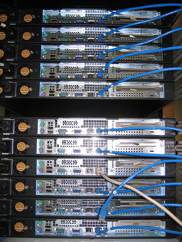

Continuous
Integration
Delivery
Deployment
Workshop
Created by Viktor Farcic for Technology Conversations / @vfarcic
Viktor Farcic
- Software Architect at Defie
- Never developed in Fortran
- Passionate about TDD, BDD and Continuous Integration, Delivery and Deployment
- Blogger in TechnologyConversations.com
- Java Test-Driven Development: Mastering TDD Through Katas

High Level Requirements
Book Shop application
- Any device (desktop, tables and mobiles)
- Search, see details and purchase
- Registration required for purchase
- Administration
High Level Design
- VMs with Vagrant
- Provisioning with Ansible
- Microservices
- Front-end decoupled from back-end
- Tested, built, deployed and tested again with containers
- Zero-downtime with reverse proxy
- CD with Jenkins
Environments
Environments
Virtual Machines
- Create
- Provision
- Destroy

- https://www.virtualbox.org/
- https://www.vagrantup.com/
vagrant plugin install vagrant-cachier
Environments
Provisioning

- SSH based
- Client only
- YAML configuration
- Push
Environments
Development
vfarcic/books-service repo
Environments
Development
git clone https://github.com/vfarcic/books-service.git
cd books-service
vagrant up dev
vagrant ssh dev
scala -version
sudo docker ps -a
exit
vagrant halt dev
Environments
Continuous Deployment
vfarcic/cd-workshop repo
Environments
Continuous Deployment
cd ~
git clone https://github.com/vfarcic/cd-workshop.git
cd cd-workshop
vagrant up cd
vagrant ssh cd
sudo docker ps -a
exit
Environments
Production
vfarcic/cd-workshop repo
- VM: Vagrantfile
Environments
Production
vagrant up prod
vagrant ssh prod
ssh-keygen # Enter to all questions
exit
vagrant ssh cd
ssh-keygen # Enter to all questions
ssh-copy-id 192.168.50.92 # Pass: vagrant
VM and Provisioning
Benefits
- Version control
- Repeatable
- Reliable
- Automated
- Fast
- Easy to integrate with CD servers
Microservices and front-end

Microservices
books-service repo
- Unit/Functional Tests: ServiceSpec.scala
- Code: ServiceActor.scala
Microservices
Benefits
- Simple and easy to understand
- Decoupled
- Easy to scale
- Easy to test
- No long-term commitment
- Frequent deployment
- Innovation
Containers

Containers
Docker

- Portable
- Low resource usage
- Scalable
- Isolation
- Self-sufficient
- Immutable
Containers
Tests
vfarcic/books-service repo
Containers
Tests
git clone https://github.com/vfarcic/books-service.git
cd books-service
sudo ./build_tests.sh
sudo docker images | grep vfarcic/books-service-tests
sudo docker run -t --rm \
-v $PWD/target/scala-2.10:/source/target/scala-2.10 \
-v /data/.ivy2:/root/.ivy2/cache \
vfarcic/books-service-tests
ll target/scala-2.10/books-service-assembly-1.0.jar
Containers
Create Docker Image Exercise
cd ~
git clone https://github.com/vfarcic/books-fe.git
cd books-fe
clear && cat create_docker.md
Containers
Application
vfarcic/books-service repo
Containers
Application
cd ~/books-service
sudo docker build -t vfarcic/books-service .
sudo docker run -d --name books-service \
-p 9001:8080 \
-v /data/books-service/db:/data/db \
vfarcic/books-service
curl -H 'Content-Type: application/json' -X PUT -d \
'{"_id": 1, "title": "My First Book", "author": "John Doe", "description": "Not a very good book"}' \
http://localhost:9001/api/v1/books | python -mjson.tool
curl -H 'Content-Type: application/json' -X PUT -d \
'{"_id": 2, "title": "My Second Book", "author": "John Doe", "description": "Not a bad as the first book"}' \
http://localhost:9001/api/v1/books | python -mjson.tool
curl -H 'Content-Type: application/json' -X PUT -d \
'{"_id": 3, "title": "My Third Book", "author": "John Doe", "description": "Failed writers club"}' \
http://localhost:9001/api/v1/books | python -mjson.tool
curl http://localhost:9001/api/v1/books | python -mjson.tool
curl http://localhost:9001/api/v1/books/_id/1 | python -mjson.tool
sudo docker rm -f books-service
sudo docker ps -a
Containers
Run Docker Image with Mock Server Exercise
Run books-fe image using following parameters.- Use -d to detach from the process
- Set env var MODE to mock_server
- Set env var MOCK_PORT to 9002
- Expose port 8080 as 9001
- Expose port 9002 as 9002
- Image is called books-fe
Open http://192.168.50.91:9001 to confirm and then kill the Docker process
Containers
Functional Tests with BDD
vfarcic/books-fe repo
Containers
Functional Tests with BDD
cd ~/books-fe
sudo docker run -t --rm \
-v $PWD/stories:/opt/bdd/data/stories \
vfarcic/bdd-runner-phantomjs \
-P url=http://172.17.42.1:9001 \
-P widthHeight=1024,768 \
--story_path data/stories/functional/**
sudo docker rm -f books-fe-mock
Containers
Registry
Containers
Registry
sudo docker tag -f vfarcic/books-service-tests \
192.168.50.91:5000/books-service-tests
sudo docker tag -f vfarcic/books-service \
192.168.50.91:5000/books-service
sudo docker images | grep books-service
sudo docker push \
192.168.50.91:5000/books-service-tests
sudo docker push \
192.168.50.91:5000/books-service
curl http://localhost:5000/v1/search?q=books-service | python -mjson.tool
Containers
Push to Registry Exercise
Push books-fe image to the registry.Containers
Application in production
vfarcic/books-service repo
Containers
Application in Production
ansible-playbook /vagrant/ansible/docker.yml \
-i /vagrant/ansible/hosts/prod
exit
vagrant ssh prod
sudo docker run -d --name books-service \
-p 9001:8080 \
-v /data/books-service/db:/data/db \
192.168.50.91:5000/books-service
curl -H 'Content-Type: application/json' -X PUT -d \
'{"_id": 1, "title": "My First Book", "author": "John Doe", "description": "Not a very good book"}' \
http://localhost:9001/api/v1/books | python -mjson.tool
curl -H 'Content-Type: application/json' -X PUT -d \
'{"_id": 2, "title": "My Second Book", "author": "John Doe", "description": "Not a bad as the first book"}' \
http://localhost:9001/api/v1/books | python -mjson.tool
curl -H 'Content-Type: application/json' -X PUT -d \
'{"_id": 3, "title": "My Third Book", "author": "John Doe", "description": "Failed writers club"}' \
http://localhost:9001/api/v1/books | python -mjson.tool
curl http://localhost:9001/api/v1/books | python -mjson.tool
Containers
Application in Production Exercise
Run books-fe image using following parameters.- Use -d to detach from the process
- Expose port 8080 as 9011
- Image is called 192.168.50.91:5000/books-fe
Open http://192.168.50.92:9011 to confirm
Containers
nginx
vfarcic/cd-workshop repo
Containers
nginx
exit
vagrant ssh cd
curl -H 'Content-Type: application/json' \
http://192.168.50.92:9001/api/v1/books | python -mjson.tool
curl -H 'Content-Type: application/json' \
http://192.168.50.92/api/v1/books | python -mjson.tool
ansible-playbook /vagrant/ansible/nginx_with_books.yml \
-i /vagrant/ansible/hosts/prod
curl -H 'Content-Type: application/json' \
http://192.168.50.92/api/v1/books | python -mjson.tool
Containers
nginx Exercise
- Template is located in /vagrant/ansible/roles/nginx_with_books/templates/services.conf.j2
- Modify template to proxy / to http://172.17.42.1:9011.
- Rerun Ansible playbook /vagrant/ansible/nginx_with_books.yml
Open http://192.168.50.92 to confirm
Containers
Post Deployment Integration Tests
vfarcic/books-service repo
Containers
Post Deployment Integration Tests
sudo docker run -t --rm \
-e "TEST_TYPE=integ" \
-e "DOMAIN=http://192.168.50.92" \
-v /data/.ivy2:/root/.ivy2/cache \
192.168.50.91:5000/books-service-tests
Containers
Post Deployment Integration Tests Exercise
Run container with integration tests from the ~/books-fe directory- Use -t to see terminal output and --rm to remove when finished
- Share container volume /opt/bdd/data/stories with $PWD/stories on the host
- Container name is vfarcic/bdd-runner-phantomjs
- Use -P url=http://192.168.50.92 -P widthHeight=1024,768 --story_path data/stories/integration/** as command
Containers
Post Deployment Stress Tests
vfarcic/books-stress repo
Containers
Post Deployment Stress Tests
cd ~
git clone https://github.com/vfarcic/books-stress.git
cd books-stress
sudo docker build -t vfarcic/books-stress .
sudo docker tag vfarcic/books-stress 192.168.50.91:5000/books-stress
sudo docker push 192.168.50.91:5000/books-stress
sudo docker run -t --rm \
-e "DOMAIN=http://192.168.50.92" \
-e "USERS=10" \
-e "USERS_OVER_SECONDS=20" \
-e "MAX_RESPONSE_TIME=1000" \
-e "DURATION=120" \
-v /data/stress/results:/stress/results \
192.168.50.91:5000/books-stress
exit
Zero-downtime

Zero-downtime
- No downtime
- Production testing
- nginx & etcd
Zero-downtime
Traditional Deployment
- Come to the office one weekend when there is least traffic
- Download latest release
- Stop the running application
- Deploy the latest release
- Start the deployed application
- Hope that there is no reason for rollback
- Hope that no one noticed the downtime
Zero-downtime
Traditional Deployment
vagrant ssh prod
curl http://192.168.50.92/api/v1/books | python -mjson.tool
sudo docker pull 192.168.50.91:5000/books-service
sudo docker rm -f books-service
curl http://192.168.50.92/api/v1/books | python -mjson.tool
sudo docker run -d --name books-service \
-p 9001:8080 \
-v /data/books-service/db:/data/db \
192.168.50.91:5000/books-service
curl http://192.168.50.92/api/v1/books | python -mjson.tool
sudo docker rm -f books-service
Zero-downtime
Blue-Green: Parallel Running
Zero-downtime
Blue-Green: Parallel Running
sudo docker run -d --name books-service-db \
-p 27017:27017 \
-v /data/books-service/db:/data/db \
mongo
sudo docker run -d --name books-service-blue \
-p 9001:8080 \
--link books-service-db:db \
192.168.50.91:5000/books-service
curl http://192.168.50.92/api/v1/books | python -mjson.tool
sudo docker pull 192.168.50.91:5000/books-service
sudo docker run -d --name books-service-green \
-p 9002:8080 \
--link books-service-db:db \
192.168.50.91:5000/books-service
sudo docker ps -a | grep books-service
curl http://192.168.50.92:9002/api/v1/books | python -mjson.tool
cat /data/nginx/sites-enabled/services.conf
exit
Zero-downtime
Blue-Green: Tests
vagrant ssh cd
sudo docker run --rm \
-e "TEST_TYPE=integ" \
-e "DOMAIN=http://192.168.50.92:9002" \
-v /data/.ivy2:/root/.ivy2/cache \
192.168.50.91:5000/books-service-tests
sudo docker run -t --rm \
-e "DOMAIN=http://192.168.50.92:9002" \
-e "USERS=10" \
-e "USERS_OVER_SECONDS=20" \
-e "MAX_RESPONSE_TIME=1000" \
-e "DURATION=120" \
-v /data/stress/results:/stress/results \
192.168.50.91:5000/books-stress
exit
Zero-downtime
Blue-Green: Switch
vagrant ssh prod
cat /data/nginx/sites-enabled/services.conf
sudo sed -i 's/9001/9002/g' /data/nginx/sites-enabled/services.conf
cat /data/nginx/sites-enabled/services.conf
sudo docker kill -s HUP nginx
sudo docker stop books-service-blue
sudo docker ps -a | grep books-service
exit
Zero-downtime
Blue-Green: Final Tests
vagrant ssh cd
sudo docker run -it --rm \
-e "TEST_TYPE=integ" \
-e "DOMAIN=http://192.168.50.92" \
-v /data/.ivy2:/root/.ivy2/cache \
192.168.50.91:5000/books-service-tests
exit
vagrant ssh prod
sudo docker rm -f books-service-blue
sudo docker ps -a | grep books-service
curl http://192.168.50.92/api/v1/books | python -mjson.tool
exit
Zero-downtime
Blue-Green: etcd
vagrant ssh cd
ansible-playbook /vagrant/ansible/etcd.yml \
-i /vagrant/ansible/hosts/prod
exit
vagrant ssh prod
etcdctl set /books-service/color green
etcdctl set /books-service/port 9002
etcdctl get /books-service/color
etcdctl get /books-service/port
Zero-downtime
Blue-Green: Better Switch
sudo docker pull 192.168.50.91:5000/books-service
sudo docker run -d --name books-service-blue \
-p 9001:8080 \
--link books-service-db:db \
192.168.50.91:5000/books-service
# Run tests
sudo sed -i 's/9002/9001/g' /data/nginx/sites-enabled/services.conf
cat /data/nginx/sites-enabled/services.conf
sudo docker kill -s HUP nginx
sudo docker stop books-service-green
# Run tests
curl -H 'Content-Type: application/json' \
http://192.168.50.92/api/v1/books | python -mjson.tool
sudo docker rm -f books-service-green
etcdctl set /books-service/color blue
etcdctl set /books-service/port 9001
exit
Continuous Delivery
Every commit that passed all tests is deployed to production automatically
Continuous Deployment
Ansible
Continuous Deployment
Ansible
vagrant ssh cd
ansible-playbook /vagrant/ansible/books-service.yml \
-i /vagrant/ansible/hosts/prod
Continuous Deployment
Ansible Exercise
Playbook
books-fe.yml
- Create ~/vagrant/ansible/books-fe.yml
- Include roles docker, nginx, etcd and books-fe
- Create ~/vagrant/ansible/roles/books-fe/defaults/main.yml
- Create ~/vagrant/ansible/roles/books-fe/tasks/main.yml
- Create ~/vagrant/ansible/roles/books-fe/templates/main.yml
Continuous Deployment
Ansible Exercise
Playbook Solution
books-fe.yml
- hosts: books-service
remote_user: vagrant
sudo: yes
roles:
- docker
- nginx
- etcd
- books-fe
Continuous Deployment
Ansible Exercise
Colors
- Retrieve colors from the server with 9011 as the default blue and 9012 as the default green ports
- Set port fact/variable as the previously retrieved new_port
- Use debug to see the output (i.e. - debug: var=colors)
ansible-playbook /vagrant/ansible/books-fe.yml \
-i /vagrant/ansible/hosts/prod --tags "books-fe"
Continuous Deployment
Ansible Exercise
Colors Solution
roles/books-fe/defaults/main.yml
container: books-fe
blue_port: 9011
green_port: 9012
Continuous Deployment
Ansible Exercise
Colors Solution
roles/books-fe/tasks/main.yml
- name: Colors are retrieved
blue_green:
name: {{ container }}
blue_port: {{ blue_port }}
green_port: {{ green_port }}
register: colors
tags: [books-fe]
- debug: var=colors
tags: [books-fe]
- name: Set port
set_fact: port={{ colors.new_port }}
tags: [books-fe]
- debug: var=port
tags: [books-fe]
Continuous Deployment
Ansible Exercise
Run Container
- Pull the latest books-fe container from the registry 192.168.50.91:5000
- Remove the Docker process with the same name as the new color
- Run the container as the new color
Continuous Deployment: Ansible Exercise
Run Container Solution
roles/books-fe/tasks/main.yml
- name: Latest container is pulled
shell: docker pull {{ registry }}/{{ container }}
tags: [books-fe]
- name: Container is absent
docker:
image: '{{ registry }}/{{ container }}'
name: '{{ container }}-{{ colors.new_color }}'
state: absent
tags: [books-fe]
- name: New container is running
docker:
name: '{{ container }}-{{ colors.new_color }}'
image: '{{ registry }}/{{ container }}'
ports: '{{ colors.new_port }}:8080'
state: running
tags: [books-fe]
Continuous Deployment: Ansible Exercise
Update nginx configuration
- Create the nginx template
- Deploy the template to the server
- Restart nginx container if template changed
Continuous Deployment: Ansible Exercise
Update nginx configuration solution
roles/books-fe/templates/books-fe.conf
location / {
proxy_pass http://172.17.42.1:{{ port }}/;
}
Continuous Deployment: Ansible Exercise
Update nginx configuration solution
roles/books-fe/tasks/main.yml
- name: nginx config files are present
template:
src: {{ container }}.conf.j2
dest: /data/nginx/includes/{{ container }}.conf
register: nginx_result
tags: [books-fe]
- debug: var=nginx_result
tags: [books-fe]
- name: nginx container is restarted
shell: docker kill -s HUP nginx
when: nginx_result|changed
tags: [books-fe]
Continuous Deployment: Ansible Exercise
Run Integration Tests
- Remove tests container
- Run integration tests in local
Continuous Deployment: Ansible Exercise
Run Integration Tests Solution
roles/books-fe/tasks/main.yml
- name: Integration tests are absent
docker:
name: '{{ container }}-tests'
image: '{{ registry }}/{{ container }}-tests'
state: absent
delegate_to: 127.0.0.1
tags: [books-fe]
- name: Integration tests are run
command: >
sudo docker run -t --name {{ container }}-tests
-v /home/vagrant/books-fe/stories:/opt/bdd/data/stories
vfarcic/bdd-runner-phantomjs
-P url=http://192.168.50.92
-P widthHeight=1024,768
--story_path data/stories/integration/**
delegate_to: 127.0.0.1
register: test_results
ignore_errors: yes
tags: [books-fe]
- debug: var=test_results
tags: [books-fe]
Continuous Deployment: Ansible Exercise
Revert if Tests Failed
- Revert nginx configuration
- Fail deployment
Continuous Deployment: Ansible Exercise
Revert if Tests Failed Solution
roles/books-fe/tasks/main.yml
- name: Revert colors
set_fact: port={{ colors.current_port }}
when: test_results|failed
tags: [books-fe]
- debug: var=port
tags: [books-fe]
- name: nginx config files are present
template:
src: {{ container }}.conf.j2
dest: /data/nginx/includes/{{ container }}.conf
when: test_results|failed
tags: [books-fe]
- name: nginx container is restarted
shell: docker kill -s HUP nginx
when: test_results|failed
tags: [books-fe]
- name: fail deployment
fail: msg="Deployment failed"
when: test_results|failed
tags: [books-fe]
Continuous Deployment: Ansible Exercise
Cleanup if Tests Were Successful
- Update colors
- Stop the old container
Continuous Deployment: Ansible Exercise
Cleanup if Tests Were Successful Solution
roles/books-fe/tasks/main.yml
- name: Colors are changed
blue_green:
name: {{ container }}
blue_port: {{ blue_port }}
green_port: {{ green_port }}
state: changed
register: colors
when: test_results|success
tags: [books-fe]
- debug: var=colors
tags: [books-fe]
- name: Container is stopped
docker:
image: '{{ registry }}/{{ container }}'
name: '{{ container }}-{{ colors.old_color }}'
state: stopped
when: test_results|success
tags: [books-fe]
Continuous Deployment
Jenkins
Continuous Deployment
Jenkins
ansible-playbook /vagrant/ansible/cd.yml -c local
Continuous Deployment
Jenkins Nodes
Nodes
- Click Manage Jenkins > Manage Nodes > CD > Configure
- Click Add button in the Credentials Section
- Type vagrant as both username and password and click the Add button
- Select the newly created key in the Credentials section
- Click the Save and, finally, the Launch slave agent buttons
Continuous Deployment
Jenkins Nodes
Jobs


Additional Information
Continuous Integration, Delivery and Deployment
TechnologyConversations.com